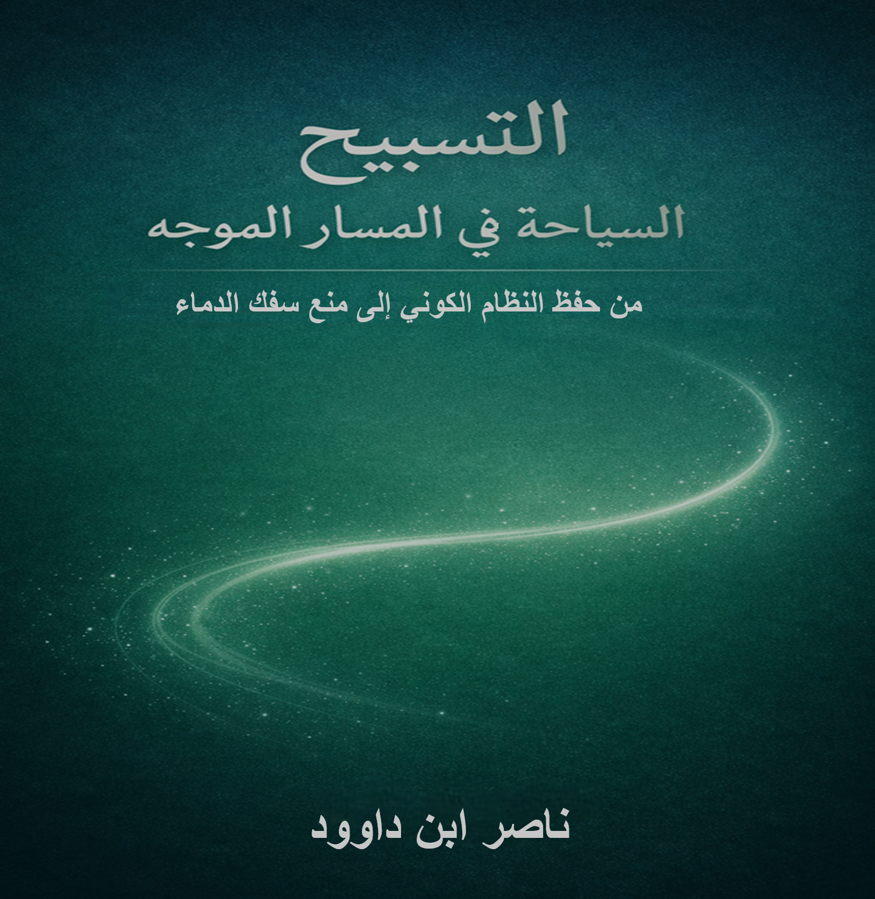

📥 روابط التحميل المباشر
📄 DOCX 📖 PDF (مباشر) 📖 PDF (خارجي) 🌐 HTML 📝 نص خام (خارجي) 📝 نص خام (مباشر) 🌐 Archive.orgوصف الكتاب
مقدمة الكتاب: "التسبيح: السباحة في المسار الموجَّه من حفظ النظام الكوني إلى منع سفك الدماء"
بسم الله الرحمن الرحيم
الحمد لله الذي سبَّح له ما في السماوات والأرض، وجعل التسبيح حركة كونية دائمة تحفظ النظام وتمنع الفساد. والصلاة والسلام على سيدنا محمد، الذي جعل الله صلاته وتسبيحه نورًا يهدي الخلق إلى الطريق المستقيم.
في هذا الكتاب، أقدم رؤية متكاملة للتسبيح من السؤال عن معنى التسبيح إلى طرحه بوصفه مسارًا موجَّهًا للحياة والوجود، مستمدة من تدبر ثلاثة أعمال سابقة:
الأعمال السابقة التي انبثق منها هذا الكتاب:
- "كتاب "الدم - شفرة الوجود التي أهملناها"، الذي كشف عن "الدم" كرمز لغوي (د + م) للمسار الموجه المكتمل
- "تحرير المصطلح القرآني – دراسة تطبيقية في فقه اللسان القرآني" (المجلد 1)
- "السجود والتسبيح في القرآن من التنزيه القلبي إلى الخضوع العملي"
من هذه الأعمال الثلاثة انبثق هذا الكتاب ليقدم تفسيرًا جديدًا:
التسبيح ليس مجرد تنزيه لفظي، بل "سباحة" عملية في المسار الموجه – المسار الذي يرمز إليه "الدم" كشفرة الوجود – وفق أمر الله، سننه، قوانينه الكونية، والفطرة الإنسانية.
التسبيح والدم: العلاقة الجوهرية
| المفهوم القرآني | الدلالة اللغوية والرمزية | التطبيق العملي |
|---|---|---|
| التسبيح | السباحة في المسار الموجه | الانسجام مع النظام الكوني |
| الدم | شفرة الوجود (د + م) | المسار الحيوي المكتمل |
| سفك الدماء | كسر النظام الكوني | الفساد في الأرض |
أبرز مميزات الكتاب:
- ربط التسبيح بمنهج حياة متكامل يجمع بين الوحي والعلم
- كشف العلاقة بين التسبيح وحفظ النظام الكوني
- تحليل رمزية "الدم" كشفرة وجودية في القرآن
- ربط التسبيح بالشفاء الجسدي والنفسي
- دراسة التسبيح كطاقة حيوية (بيوفوتونات)
- تحليل العلاقة بين التسبيح والسجود كجناحي العبودية
المحاور الرئيسية:
- الرمزية اللغوية: جذر "سبح" وشفرة "الدم" (د + م)
- المفهوم الجوهري: التسبيح كتنزيه يتجاوز الألفاظ
- التفسير الجديد: السباحة في المسار الموجه وعكسه سفك الدماء
- البعد العملي: من الأقوال إلى الأفعال
- الشفاء القرآني: التسبيح كشفاء للأمراض
- العبودية الشاملة: التسبيح والسجود كمشروع حياة
فهرس المحتويات
أهم فصول الكتاب:
- الفصل 3: الرمزية اللغوية: جذر "سبح" وشفرة "الدم" (د + م)
- الفصل 6: تفسير جديد للتسبيح: السباحة في المسار الموجه وعكسه سفك الدماء
- الفصل 9: المفهوم الجوهري للسجود – خضوع عملي وتسليم كامل
- الفصل 11: سلسلة الأمراض وعلاقتها بعدم التسبيح – التسبيح كشفاء
- الفصل 12: الدراسات العلمية الحديثة عن البيوفوتونات كطاقة حيوية
- الفصل 16: قصة خلق آدم وأمر السجود – مواجهة الكبرياء
- الفصل 26: نحو عبودية شاملة – التسبيح والسجود كمشروع حياة
الرؤية النهائية
الظالمون، الفاسقون، المفسدون، الكافرون لا يسبحون، فيفسدون في الأرض ويسفكون الدماء. أما المسبحون فيتبعون الطريق المستقيم، ويحفظون النظام الكوني والإنساني، ويصبحون قناة للفيض الإلهي.
هذا الكتاب دعوة لإعادة اكتشاف التسبيح كمنهج حياة، يجمع بين الوحي القرآني والعلم الحديث، ويحول الإنسان من كائن مفسد إلى مسبح يعمر الأرض ويحفظها.
فمن أراد أن يعيش في سلام مع نفسه، ومع الكون، ومع خالقه، فليسبح بحمد ربه، وليخضع له سجودًا وعملًا.
لمن هذا الكتاب؟
- الباحثون في الدراسات القرآنية: المهتمون بالتفسير اللغوي والرمزي
- المهتمون بالطب البديل والطاقة: الراغبون في فهم الشفاء القرآني
- علماء النفس والروحانية: الباحثون عن فهم أعمق للعلاقة بين العبادة والصحة
- المفكرون والفلاسفة: المهتمون بفلسفة الدين والوجود
- عموم القراء: الراغبون في فهم التسبيح كمنهج حياة متكامل
- المهتمون بالإعجاز العلمي في القرآن: الباحثون عن تكامل العلم والدين
جدول ربط تمهيدي:
- التسبيح: السباحة في المسار الموجه (النظام الكوني)
- الدم: شفرة الوجود (د + م) - المسار الحيوي المكتمل
- سفك الدماء: كسر النظام الكوني (الفساد في الأرض)
- السجود: الخضوع العملي والتسليم الكامل
- الشفاء: نتيجة التسبيح والسجود (الانسجام مع النظام الكوني)